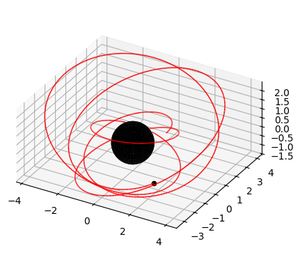
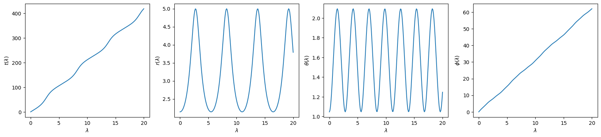
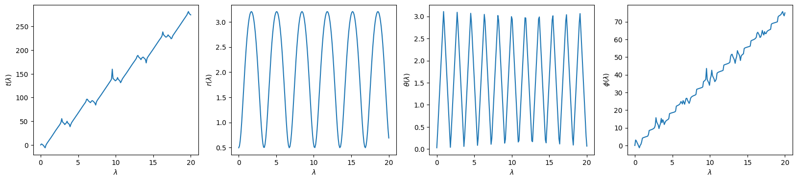
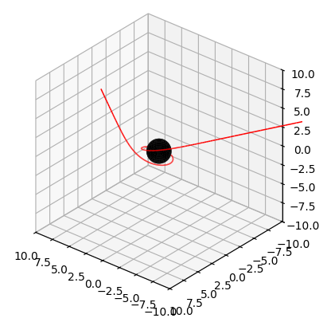
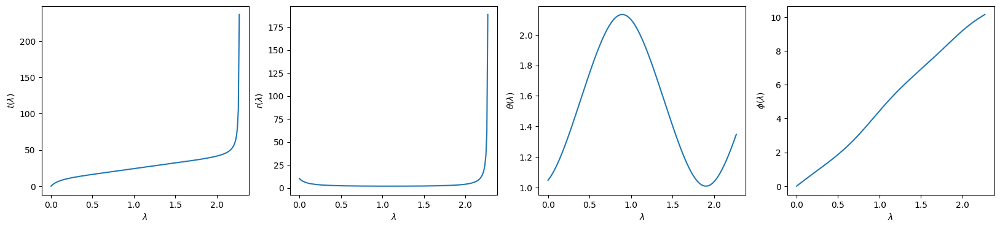

Getting Started#
Stable Bound Orbits#
Kerrgeopy computes orbits in Boyer-Lindquist coordinates \((t,r,\theta,\phi)\). Let \(M\) represent the mass of the primary body and let \(J\) represent its angular momentum. Working in geometrized units where \(G=c=1\), stable bound orbits are parametrized using the following variables:
\(a\) - spin of the primary body
\(p\) - orbital semilatus rectum
\(e\) - orbital eccentricity
\(x\) - cosine of the orbital inclination
Note that \(a\) and \(x\) are restricted to values between -1 and 1, while \(e\) is restricted to values between 0 and 1. Retrograde orbits are represented using a negative value for \(a\) or for \(x\). Polar orbits, marginally bound orbits, and orbits around an extreme Kerr black hole are not supported.
First, construct a StableOrbit using the four parameters described above.
import kerrgeopy as kg
from math import cos, pi
orbit = kg.StableOrbit(0.999,3,0.4,cos(pi/6))
Plot the orbit from \(\lambda = 0\) to \(\lambda = 10\) using the plot() method
fig, ax = orbit.plot(0,10)

Next, compute the time, radial, polar and azimuthal components of the trajectory as a function of Mino time using the trajectory() method. By default, the time and radial components of the trajectory are given in geometrized units and are normalized using \(M\) so that they are dimensionless.
t, r, theta, phi = orbit.trajectory()
import numpy as np
import matplotlib.pyplot as plt
time = np.linspace(0,20,200)
plt.figure(figsize=(20,4))
plt.subplot(1,4,1)
plt.plot(time, t(time))
plt.xlabel(r"$\lambda$")
plt.ylabel(r"$t(\lambda)$")
plt.subplot(1,4,2)
plt.plot(time, r(time))
plt.xlabel(r"$\lambda$")
plt.ylabel(r"$r(\lambda)$")
plt.subplot(1,4,3)
plt.plot(time, theta(time))
plt.xlabel(r"$\lambda$")
plt.ylabel(r"$\theta(\lambda)$")
plt.subplot(1,4,4)
plt.plot(time, phi(time))
plt.xlabel(r"$\lambda$")
plt.ylabel(r"$\phi(\lambda)$")
plt.show()

Orbital Properties#
Use the constants_of_motion() method to compute the dimensionless energy, angular momentum and Carter constant. By default, constants of motion are given in geometrized units where \(G=c=1\) and are scale-invariant, meaning that they are normalized according to the masses of the two bodies as follows:
Here, \(M\) is the mass of the primary body and \(\mu\) is the mass of the secondary body.
Frequencies of motion can be computed in Mino time using the mino_frequencies() method and in Boyer-Lindquist time using the fundamental_frequencies() method. As with constants of motion, the frequencies returned by both methods are given in geometrized units and are normalized by \(M\) so that they are dimensionless.
from IPython.display import display, Math
E, L, Q = orbit.constants_of_motion()
upsilon_r, upsilon_theta, upsilon_phi, gamma = orbit.mino_frequencies()
omega_r, omega_theta, omega_phi = orbit.fundamental_frequencies()
display(Math(fr"a = {orbit.a} \quad p = {orbit.p} \quad e = {orbit.e} \quad x = {orbit.x}"))
display(Math(fr"\mathcal{{E}} = {E:.3f} \quad \mathcal{{L}} = {L:.3f} \quad \mathcal{{Q}} = {Q:.3f}"))
display(Math(fr"""\Upsilon_r = {upsilon_r:.3f} \quad
\Upsilon_\theta = {upsilon_theta:.3f} \quad
\Upsilon_\phi = {upsilon_phi:.3f} \quad
\Gamma = {gamma:.3f}"""))
display(Math(fr"""\Omega_r = {omega_r:.3f} \quad
\Omega_\theta = {omega_theta:.3f} \quad
\Omega_\phi = {omega_phi:.3f}"""))
Plunging Orbits#
Plunging orbits are parametrized using the spin parameter and the three constants of motion.
\(a\) - spin of the primary body
\(\mathcal{E}\) - Energy
\(\mathcal{L}\) - \(z\)-component of angular momentum
\(\mathcal{Q}\) - Carter constant
It is assumed that all orbital parameters are given in geometrized units where \(G=c=1\) and are normalized according to the masses of the two bodies as follows:
Construct a PlungingOrbit by passing in these four parameters.
orbit = kg.PlungingOrbit(0.9, 0.94, 0.1, 12)
As with stable orbits, the components of the trajectory can be computed using the trajectory() method
t, r, theta, phi = orbit.trajectory()
import numpy as np
import matplotlib.pyplot as plt
time = np.linspace(0,20,200)
plt.figure(figsize=(20,4))
plt.subplot(1,4,1)
plt.plot(time, t(time))
plt.xlabel(r"$\lambda$")
plt.ylabel(r"$t(\lambda)$")
plt.subplot(1,4,2)
plt.plot(time, r(time))
plt.xlabel(r"$\lambda$")
plt.ylabel(r"$r(\lambda)$")
plt.subplot(1,4,3)
plt.plot(time, theta(time))
plt.xlabel(r"$\lambda$")
plt.ylabel(r"$\theta(\lambda)$")
plt.subplot(1,4,4)
plt.plot(time, phi(time))
plt.xlabel(r"$\lambda$")
plt.ylabel(r"$\phi(\lambda)$")
plt.show()

Alternative Parametrizations#
Use the from_constants() class method to construct a StableOrbit from the spin parameter and constants of motion \((a,E,L,Q)\)
orbit = kg.StableOrbit.from_constants(0.9, 0.95, 1.6, 8)
Use the Orbit class to construct an orbit from the spin parameter \(a\), initial position \((t_0,r_0,\theta_0,\phi_0)\) and initial four-velocity \((u^t_0,u^r_0,u^{\theta}_0,u^{\phi}_0)\)
stable_orbit = kg.StableOrbit(0.999,3,0.4,cos(pi/6))
x0 = stable_orbit.initial_position
u0 = stable_orbit.initial_velocity
orbit = kg.Orbit(0.999,x0,u0)
t, r, theta, phi = orbit.trajectory()
time = np.linspace(0,20,200)
plt.figure(figsize=(20,4))
plt.subplot(1,4,1)
plt.plot(time, t(time))
plt.xlabel(r"$\lambda$")
plt.ylabel(r"$t(\lambda)$")
plt.subplot(1,4,2)
plt.plot(time, r(time))
plt.xlabel(r"$\lambda$")
plt.ylabel(r"$r(\lambda)$")
plt.subplot(1,4,3)
plt.plot(time, theta(time))
plt.xlabel(r"$\lambda$")
plt.ylabel(r"$\theta(\lambda)$")
plt.subplot(1,4,4)
plt.plot(time, phi(time))
plt.xlabel(r"$\lambda$")
plt.ylabel(r"$\phi(\lambda)$")
plt.show()
Lightlike Orbits#
Lightlike orbits are parametrized using the spin parameter and two constants of motion:
\(a\) - spin of the primary body
\(\eta\) - Carter’s constant per squared energy
\(\ell\) - angular momentum per energy
where \(E = -p_t\) is the conserved energy observed at infinity, \(L = p_\phi\) is the conserved angular momentum observed at infinity and \(Q\) is the Carter’s constant.
Construct a LightOrbit using the initial position and the initial momentum.
orbit = kg.LightOrbit(0.9, (0, 10, pi/3, 0), (1.3, -1.0002785057472545, 0.007, 0.04))
The LightOrbit class has lambda_x attribute, specifying the Mino time of escape or capture. This gets updated after calling trajectory()
t, r, theta, phi = orbit.trajectory()
orbit.lambda_x
np.float64(2.2753015251537745)
As with timelike orbits, the plot() method can be used to plot the orbit
fig, ax = orbit.plot(0, 2.27, axes_limits=(-10, 10, -10, 10, -10, 10), azimuth=130)

Using the trajectory() method, we can compute the trajectory of the light ray as a function of Mino time \(\lambda\).
import numpy as np
import matplotlib.pyplot as plt
time = np.linspace(0,2.27,200)
plt.figure(figsize=(20,4))
plt.subplot(1,4,1)
plt.plot(time, t(time))
plt.xlabel(r"$\lambda$")
plt.ylabel(r"$t(\lambda)$")
plt.subplot(1,4,2)
plt.plot(time, r(time))
plt.xlabel(r"$\lambda$")
plt.ylabel(r"$r(\lambda)$")
plt.subplot(1,4,3)
plt.plot(time, theta(time))
plt.xlabel(r"$\lambda$")
plt.ylabel(r"$\theta(\lambda)$")
plt.subplot(1,4,4)
plt.plot(time, phi(time))
plt.xlabel(r"$\lambda$")
plt.ylabel(r"$\phi(\lambda)$")
plt.show()

Distant Lightlike Orbits#
Distant lightlike orbits are parametrized using the spin parameter and Bardeen’s coordinates:
\(a\) - spin of the primary body
\(\alpha, \beta\) - Bardeen’s coordinates
Construct a DistantLightOrbit using the initial angular coordinates \((\theta, \phi)\) and Bardeen’s coordinates.
orbit = kg.DistantLightOrbit(0.9, pi/3, 0, -4, 4.5)
The class extends from LightOrbit, so the same methods are accessible.